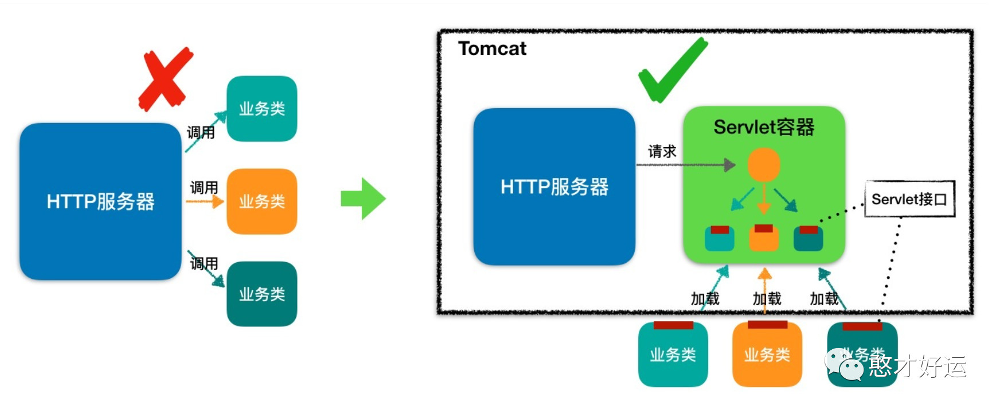
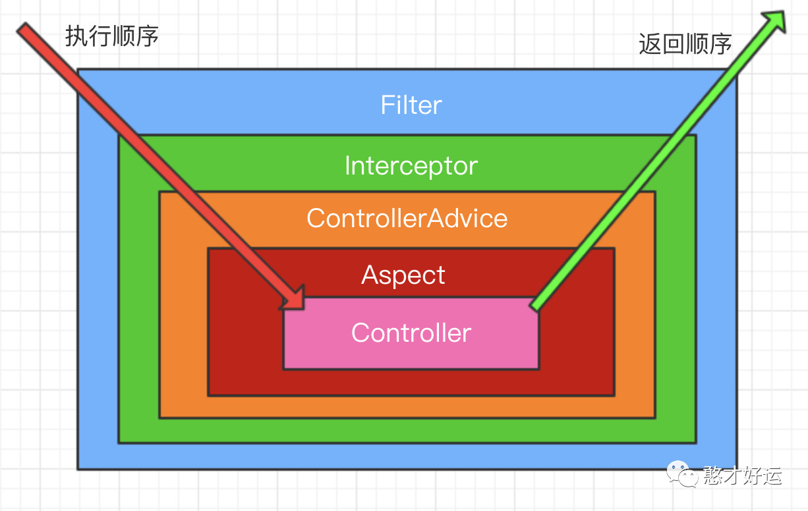
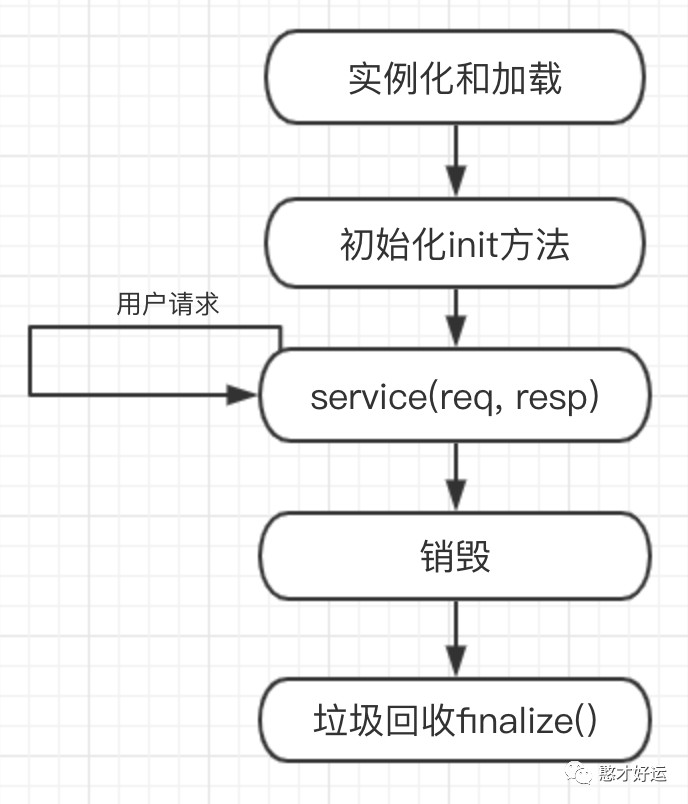
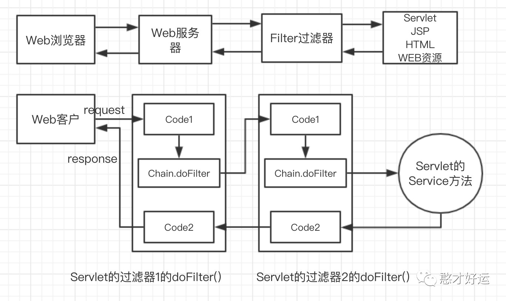
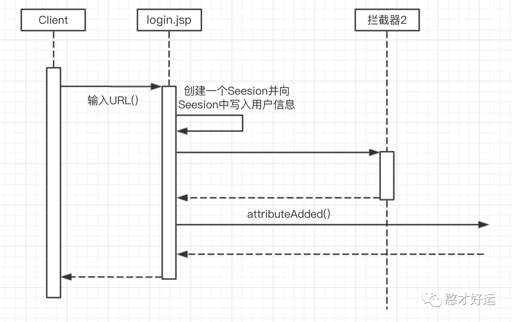
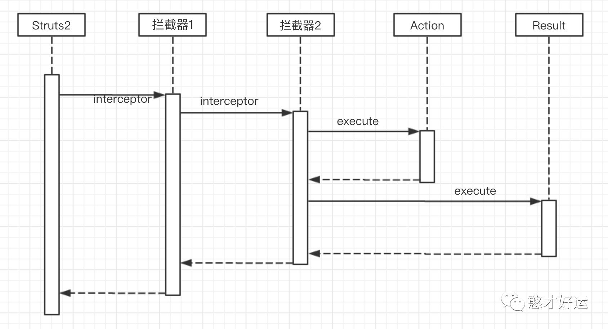
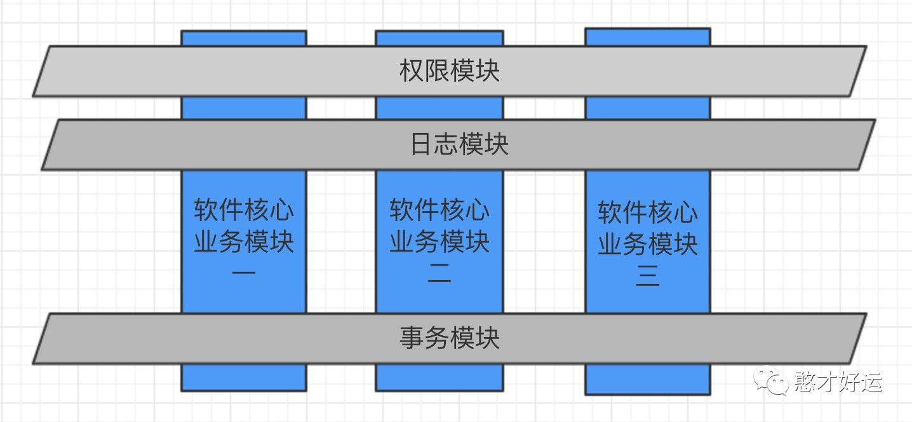

概念
Servlet类
Servlet是一种运行服务器端的Java应用程序，具有独立于平台和协议的特性，并且可以动态的生成Web页面，它工作在客户端请求与服务器响应的中间层。Servlet 的主要功能在于交互式地浏览和修改数据，生成动态Web内容。这个过程为：
- 客户端发送请求至服务器端；
- 服务器将请求信息发送至Servlet；
- Servlet 生成响应内容并将其传给服务器。响应内容动态生成，通常取决于客户端的请求；
- 服务器将响应返回给客户端。
在 Web 应用程序中，一个 Servlet 在一个时刻可能被多个用户同时访问。这时 Web 容器将为每个用户创建一个线程来执行 Servlet。如果 Servlet 不涉及共享资源的问题，不必关心多线程问题。但如果 Servlet 需要共享资源，需要保证 Servlet 是线程安全的。最新版本3.1，为了简化开发流程，Servlet 3.0 引入了注解（annotation），这使得 web 部署描述符 web.xml 不再是必须的选择。
SpringBoot使用注解实现一个简单的Servlet，代码如下：
1 | ("/myServlet") |
本地访问URL：localhost:8080/myServlet?name=hancaihaoyun，执行结果如下:
1 | ========time filter init======== |
Servlet同词多义
在工作中我们反复遇到Servlet这个名词，在不同的语境下其实表示的是不同的含义。早期为了实现HTTP服务器和业务类解耦，定义了Servlet接口，各个业务类都必须实现这个这个接口，有时我们也把实现了Servlet接口的业务类叫做Servlet。后续又发明了Servlet容器，Servlet容器用来加载和管理业务类，HTTP服务器不直接跟业务类打交道，而是把请求交给Servlet容器去处理，Servlet容器会将请求转发到具体的Servlet，如果这个Servlet还没有创建，就加载并实例化这个Servlet，然后调用这个Servlet的接口方法，因此Servlet接口其实是Servlet容器跟具体业务类之间的接口，而Servlet接口和Servlet容器这一整套的规范叫做Servlet规范。
Servlet容器与Spring容器有什么关系?
Tomcat&Jetty在启动时给每个Web应用创建一个全局的上下文环境，这个上下文就是ServletContext，其为后面的Spring容器提供宿主环境。
Tomcat&Jetty在启动过程中触发容器初始化事件，Spring的ContextLoaderListener会监听到这个事件，它的contextInitialized方法会被调用，在这个方法中，Spring会初始化全局的Spring根容器，这个就是Spring的IoC容器，IoC容器初始化完毕后，Spring将其存储到ServletContext中，便于以后来获取。
Tomcat&Jetty在启动过程中还会扫描Servlet，一个Web应用中的Servlet可以有多个，以SpringMVC中的DispatcherServlet为例，这个Servlet实际上是一个标准的前端控制器，用以转发、匹配、处理每个Servlet请求。
Servlet一般会延迟加载，当第一个请求达到时，Tomcat&Jetty发现DispatcherServlet还没有被实例化，就调用DispatcherServlet的init方法，DispatcherServlet在初始化的时候会建立自己的容器，叫做SpringMVC 容器，用来持有Spring MVC相关的Bean。同时，Spring MVC还会通过ServletContext拿到Spring根容器，并将Spring根容器设为SpringMVC容器的父容器，请注意，Spring MVC容器可以访问父容器中的Bean，但是父容器不能访问子容器的Bean，也就是说Spring根容器不能访问SpringMVC容器里的Bean。说的通俗点就是，在Controller里可以访问Service对象，但是在Service里不可以访问Controller对象。
Spring容器是管理Service和Dao的，SpringMVC容器是管理Controller对象的，Servlet容器是管理Servlet对象的，单独使用Servlet时，Servlet容器是根据url等信息，选择将请求交给哪个Servlet来处理。使用SpringMVC时，Servlet容器将请求交给SpringMVC的DispatchServlet来处理。
Filter过滤器
Filter是一个可以复用的代码片段，可以用来转换HTTP请求、响应和头信息。Filter不像Servlet，它不能产生一个请求或者响应，它只是修改对某一资源的请求，或者修改从某一的响应。Servlet中的过滤器Filter是实现了javax.servlet.Filter接口的服务器端程序，主要的用途是过滤字符编码、做一些业务逻辑判断等。其工作原理是，只要你在web.xml 文件配置好要拦截的客户端请求，它都会帮你拦截到请求，此时你就可以对请求或响应(Request、Response)统一设置编码，简化操作；同时还可进行逻辑判断，如用户是否已经登陆、有没有权限访问该页面等等工作。它是随你的web应用启动而启动的，只初始化一次，以后就可以拦截相关请求，只有当你的web应用停止或重新部署的时候才销毁。Filter可认为是Servlet的一种“变种”，它主要用于对用户请求HttpServletRequest进行预处理，也可以对HttpServletResponse进行后处理，是个典型的处理链。它与Servlet的区别在于：它不能直接向用户生成响应。完整的流程是：Filter对用户请求进行预处理，接着将请求交给Servlet进行处理并生成响应，最后Filter再对服务器响应进行后处理。
Filter有如下几个用处:
-
HttpServletRequest到达Servlet之前，拦截客户的HttpServletRequest。
-
根据需要检查HttpServletRequest，也可以修改HttpServletRequest头和数据。
-
在HttpServletResponse到达客户端之前，拦截HttpServletResponse。
-
根据需要检查HttpServletResponse，也可以修改HttpServletResponse头和数据。
Filter有如下几个种类:
-
用户授权的Filter：Filter负责检查用户请求，根据请求过滤用户非法请求。
-
日志Filter：详细记录某些特殊的用户请求。
-
负责解码的Filter：包括对非标准编码的请求解码。
-
能改变XML内容的XSLT Filter等。
Filter可负责拦截多个请求或响应；一个请求或响应也可被多个请求拦截。
创建一个Filter只需两个步骤：
-
创建Filter处理类；
-
web.xml文件中配置Filter。
SpringBoot使用注解实现一个简单的Filter，代码如下：
1 | ("/*") |
上面程序实现了doFilter()方法，实现该方法就可实现对用户请求进行预处理，也可实现对服务器响应进行后处理——它们的分界线为是否调用了chain.doFilter()，执行该方法之前，即对用户请求进行预处理；执行该方法之后，即对服务器响应进行后处理。
为了更好地测试，我们增加一个UserController类，其代码如下：
1 |
|
本地访问URL：localhost:8080/user/1，执行结果如下：
1 | ========time filter init======== |
我们再来看看doFilter方法：
1 | doFilter(ServletRequest request, ServletResponse response, FilterChain chain) |
从参数我们看到，filter里面是能够获取到请求的参数和响应的数据；但此方法是无法知道是哪一个Controller类中的哪个方法被执行。还有一点需要注意的是，filter中是没法使用注入的bean的，也就是无法使用@Autowire。
1 | ("/*") |
上面代码注入的值为Null，这是为什么呢？
其实Spring中，web应用启动的顺序是：Listener->Filter->Servlet，先初始化Listener，然后再来就Filter的初始化，再接着才到我们的DispathServlet的初始化，因此，当我们需要在Filter里注入一个注解的Bean时，就会注入失败，因为Filter初始化时，注解的bean还没初始化，没法注入。
在上面的请求Filter中，仅记录请求的URL的耗时，对所有的请求都执行chain.doFilter (request,reponse)方法，当Filter对请求过滤后，依然将请求发送到目的地址。如果需要检查权限，可以在Filter中根据用户请求 的HttpSession，判断用户权限是否足够。如果权限不够，直接调用重定向即可，无须调用 chain.doFilter(request,reponse)方法。
在web.xml文件中我们需要对其需要拦截的请求配置监听范围，或者说过滤哪些url。
1 | <filter> |
在web.xml文件中配置该Filter，使用init-param元素为该Filter配置参数，init-param可接受如下两个子元素：
param-name：指定参数名；
param-value：指定参数值；
其实struts2本身就依托于一个总过滤器：
1 | <filter> |
多个匹配的Filter，是按照其在web.xml中配置的顺序来执行的。
所以这也就是，把自己的Filter或者其他的Filter（比如UrlRewrite的Filter）放在Struts的DispatcherFilter的前面的原因。因为，它们需要在请求被Struts2框架处理之前，做一些前置的工作。
当Filter被调用，并且进入了Struts2的DispatcherFilter中后，Struts2会按照在Action中配置的Interceptor Stack中的Interceptor的顺序，来调用Interceptor。
这里需要注意的是，在SpringBoot中直接使用注解@Order指定顺序会失效，默认是使用Filter的类名的单词顺序排序的，需要在Configuration中注册过滤器才行。
Spring Boot 之 Filter顺序配置 @Order无效原因解读
spring Filter 中使用@Autowired 方法
Spring在Java Filter注入Bean为Null的问题解决
Listener监听器
监听器，从字面上可以看出Listener主要用来监听应用。通过listener可以监听web服务器中某一个执行动作，并根据其要求作出相应的响应。通俗的语言说就是在application，session，request三个对象创建消亡或者往其中添加修改删除属性时自动执行代码的功能组件。比如spring 的总监听器会在服务器启动的时候实例化我们配置的bean对象 、hibernate 的 session 的监听器会监听session的活动和生命周期，负责创建、关闭session等活动。
Servlet的监听器Listener，它是实现了javax.servlet.ServletContextListener 接口的服务器端程序，它也是随web应用的启动而启动，只初始化一次，随web应用的停止而销毁。主要作用是：做一些初始化的内容添加工作、设置一些基本的内容、比如一些参数或者是一些固定的对象等等。
SpringBoot使用注解实现一个简单的Listener，来监听Tomcat容器中的ServletContext初始化和销毁的事件：
1 |
|
本地访问URL：localhost:8080/user/1，执行结果如下：
1 | MyServletContextListener Context Initialized |
Interceptor拦截器
Interceptor依赖于web框架，在SpringMVC中就是依赖于SpringMVC框架。在实现上,基于Java的反射机制，属于面向切面编程（AOP）的一种运用，就是在你的service或者一个方法前调用一个方法，或者在方法后调用一个方法，是基于JAVA的反射机制。比如动态代理就是拦截器的简单实现，在你调用方法前打印出字符串（或者做其它业务逻辑的操作），也可以在你调用方法后打印出字符串，甚至在你抛出异常的时候做业务逻辑的操作。
Servlet、Filter、Listener是配置到web.xml中（web.xml 的加载顺序是：context-param -> listener -> filter -> servlet ），Interceptor不配置到web.xml中，Struts的拦截器配置到struts.xml中，Spring的拦截器配置到spring.xml中。
SpringBoot使用注解实现一个简单的拦截器，其代码如下：
1 |
|
在WebMvcConfigurationSupport配置一下：
1 |
|
本地访问URL：localhost:8080/user/1，执行结果如下：
1 | =========preHandle======= |
我们发现拦截器中可以获取到Controller对象：
1 | preHandle(HttpServletRequest request, HttpServletResponse response, Object handler) |
object handler就是controller方法对象
1 | HandlerMethod handlerMethod = (HandlerMethod)handler; |
但我们发现获取不到方法的参数值，这个是为什么呢？在DispatcherServlet类中，方法doDispatch(HttpServletRequest request, HttpServletResponse response)

applyPreHandle这个方法执行，就是执行的拦截器的preHandler方法，但这个过程中，controller方法没有从request中获取请求参数，组装方法参数；而是在ha.handle这个方法的时候，才会组装参数
虽然没法得到方法的参数，但是可以获得IOC的Bean哦。
再说明一点的是postHandler方法
postHandler方法的执行，当controller内部有异常，posthandler方法是不会执行的。
afterCompletion方法，不管controller内部是否有异常，都会执行此方法；此方法还会有个Exception ex这个参数；如果有异常，ex会有异常值；没有异常 此值为null
注意点如果controller内部有异常，但异常被@ControllerAdvice 异常统一捕获的话，ex也会为null
Aspect切面
AOP(Aspect Oriented Programming)，是面向切面编程的技术。AOP基于IoC基础，是对OOP的有益补充。
AOP之所以能得到广泛认可，主要是因为它将应用系统拆分分了2个部分：核心业务逻辑（Core business concerns）及横向的通用逻辑，也就是所谓的切面Crosscutting enterprise concerns。例如，所有大中型应用都要涉及到的持久化管理（Persistent）、事务管理（Transaction Management）、权限管理（Privilege Management）、日志管理（Logging）和调试管理（Debugging）等。使用AOP技术，可以让开发人员只专注核心业务，而通用逻辑则使用AOP技术进行横向切入，由专人去处理这些通用逻辑，会使得任务简单明了，提高开发和调试的效率。
AOP操作可以对操作进行横向的拦截,最大的优势在于可以获取执行方法的参数，对方法进行统一的处理。常见使用日志、事务、请求参数安全验证。
SpringBoot使用注解实现一个简单的时间统计切面，其代码如下：
1 |
|
上面的代码中，我们是可以获取方法的参数的，本地访问URL：localhost:8080/user/1，执行结果如下：
1 | ========time aspect begin====== |
虽然切面aop可以拿到方法参数，但拿不到response，request对象。
生命周期
Servlet类
一般继承HttpServlet（一般的，通用Servlet由javax.servlet.GenericServlet实现Servlet接口。程序设计人员可以通过使用或继承这个类来实现通用Servlet应用。javax.servlet.http.HttpServlet实现了专门用于响应HTTP请求的Servlet，提供了响应对应HTTP标准请求的doGet()、doPost()等方法），web.xml配置servlet时如果加上load-on-start=1，Web应用启动时候加载Servlet。（在servlet的配置当中，
当Servlet被部署在应用服务器中（应用服务器中用于管理Java组件的部分被抽象成为容器） 以后，由容器控制Servlet的生命周期。除非特殊指定，否则在容器启动的时候，Servlet是不会被加载的，Servlet只会在第一次请求的时候被加载和实例化。Servlet一旦被加载，一般不会从容器中删除，直至应用服务器关闭或重新启动。但当容器做内存回收动作时，Servlet有可能被删除。也正是因为这个原因，第一次访问Servlet所用的时间要大大多于以后访问所用的时间。
Servlet在服务器的运行生命周期为，在第一次请求（或其实体被内存垃圾回收后再被访问）时被加载并执行一次初始化方法，跟着执行正式运行方法，之后会被常驻并每次被请求时直接执行正式运行方法，直到服务器关闭或被清理时执行一次销毁方法后实体销毁。Java服务器页面（JSP）是HttpServlet的扩展。由于HttpServlet大多是用来响应HTTP请求，并返回Web页面（例如HTML、XML）， 所以不可避免地，在编写Servlet时会涉及大量的HTML内容，这给Servlet的书写效率和可读性带来很大障碍，JSP便是在这个基础上产生的。其功能是使用HTML的书写格式，在适当的地方加入Java代码片断，将程序员从复杂的HTML中解放出来，更专注于Servlet本身的内容。JSP在首次被访问的时候被应用服务器转换为Servlet，在以后的运行中，容器直接调用这个Servlet，而不再访问JSP页面。JSP的实质仍然是Servlet。
- (1)装入：启动服务器时加载Servlet的实例；
- (2)初始化：Web服务器启动时或web服务器接收到请求时，或者两者之间的某个时刻启动。初始化工作由init()方法负责执行完成；
- (3)调用：从第一次到以后的多次访问，都是只调用doGet()或doPost()方法；
- (4)销毁：停止服务器时调用destroy()方法，销毁实例。
Filter过滤器
Filter必须实现javax.Servlet.Filter接口，并且必须定义以下三个方法:init()，destory()，doFilter()，空实现也行。
- (1)启动服务器时加载过滤器的实例，并调用init()方法来初始化实例；
- (2)每一次请求时都只调用方法doFilter()进行处理；
- (3)停止服务器时调用destroy()方法，销毁实例。
Listener监听器
Servlet的监听器Listener，它是实现了javax.servlet.ServletContextListener 接口的服务器端程序，它也是随web应用的启动而启动，只初始化一次，随web应用的停止而销毁。
web.xml 的加载顺序是：context-param -> listener -> filter -> servlet
Interceptor拦截器
以Struts的拦截器为例，加载了struts.xml以后，初始化相应拦截器。当action请求来时调用intercept方法，服务器停止销毁interceptor。
职责
Servlet类
-
创建并返回一个包含基于客户请求性质的动态内容的完整的html页面；
-
创建可嵌入到现有的html页面中的一部分html页面（html片段）；
-
读取客户端发来的隐藏数据；
-
读取客户端发来的显示数据；
-
与其他服务器资源（包括数据库和java的应用程序）进行通信；
-
通过状态代码和响应头向客户端发送隐藏数据。
Filter过滤器
Filter能够在一个请求到达servlet之前预处理用户请求，也可以在离开Servlet时处理http响应：
-
在执行Servlet之前，首先执行Filter程序，并为之做一些预处理工作；
-
根据程序需要修改请求和响应；
-
在Servlet被调用之后截获Servlet的执行
Listener监听器
Servlet2.4规范中提供了8个Listener接口，可以将其分为三类，分别如下：
-
第一类：与ServletContext有关的Listener接口。包括：ServletContextListener、ServletContextAttributeListener
-
第二类：与HttpSession有关的Listner接口。包括：HttpSessionListener、 HttpSessionAttributeListener、HttpSessionBindingListener、 HttpSessionActivationListener；
-
第三类：与ServletRequest有关的Listener接口，包括：ServletRequestListner、ServletRequestAttributeListener
Interceptor拦截器
与过滤器十分相似，通过层层拦截，处理用户的请求和响应。
区别
1、Servlet 流程是短的，url传来之后，就对其进行处理，之后返回或转向到某一自己指定的页面。它主要用来在业务处理之前进行控制。
2、Filter 流程是线性的， url传来之后，检查之后，可保持原来的流程继续向下执行，被下一个Filter, Servlet接收等，而Servlet 处理之后，不会继续向下传递。Filter功能可用来保持流程继续按照原来的方式进行下去，或者主导流程，而servlet的功能主要用来主导流程。
Filter可用来进行字符编码的过滤，检测用户是否登陆的过滤，禁止页面缓存等。
3、Servlet，Filter都是针对url之类的，而Listener是针对对象的操作的，如session的创建，session.setAttribute的发生，在这样的事件发生时做一些事情。
可用来进行：Spring整合Struts,为Struts的action注入属性，Web应用定时任务的实现，在线人数的统计等
4、Interceptor 拦截器，类似于Filter,不过在struts.xml中配置，不是在web.xml,并且不是针对URL的，而是针对action,当页面提交 action时，进行过滤操作，相当于struts1.x提供的plug-in机制，可以看作，前者是Struts1.x自带的Filter,而 Interceptor 是struts2 提供的Filter.
与filter不同点：
- (1)不在web.xml中配置，而是在struts.xml中完成配置，与action在一起
- (2)可由action自己指定用哪个interceptor 来在接收之前做事
5、Struts2中的过滤器和拦截器的区别与联系：
-（1）拦截器是基于java反射机制的，而过滤器是基于函数回调的。
-（2）过滤器依赖与servlet容器，而拦截器不依赖与servlet容器。
-（3）拦截器只能对Action请求起作用，而过滤器则可以对几乎所有请求起作用。
-（4）拦截器可以访问Action上下文、值栈里的对象，而过滤器不能。
-（5）在Action的生命周期中，拦截器可以多次调用，而过滤器只能在容器初始化时被调用一次。
大家应该听说过过滤器、拦截器、切面，印象上都能够起到截断拦截的作用，在做一些业务需求时，不知道如何选择。下面就来介绍一下他们之间的区别。我们这里来总结一下过滤器、拦截器、Aspect，看看区别：
如果三者方式同时采用，那他们的执行顺序是什么呢？
1 | Filter -> Interceptor -> ControllerAdvice -> Aspect -> Controller |
返回值顺序，或异常返回顺序
1 | Controller -> Aspect -> ControllerAdvice -> Interceptor -> Filter |
将上述的各个模块的代码整合在一起，同样访问本地URL：localhost:8080/user/1，执行结果如下：
1 | ========time filter init======== |
用一个图描述一下执行顺序如下：
执行流程图
Servlet类
Filter过滤器
Listener监听器
Interceptor拦截器
Aop切面
本文测试代码
ServletFilterListenerInterceptorAop
关注【憨才好运】微信公众号，了解更多精彩内容⬇️⬇️⬇️